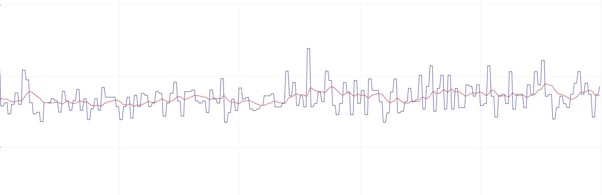

February 2022
Dev Log 7
Accomplishments in February 2022
I made a decent amount of progress in February. Firstly I wrote most of TFAC’s software, and did some Kalman Filter testing (fig1). I only need to write a couple small changes before TFAC can fly on a rocket as passive payload. I did a lot of testing to make sure that the flight software and the state machine was working well. I also found a supplier who are willing to make custom sized Fiberglass tubes for the airframe of AltusAer. And finally I made did a lot of fiddling around in CAD making some of the internal parts like bulkheads, the chute ejection system and mounting brackets for the Flight Computer

Goals for March 2022
In March I don’t think that I will be making any significant progress because of my final exams and my school year coming to an end. However I intend on finishing the flight software and building AltusAer along with working on the video I want to make on it.